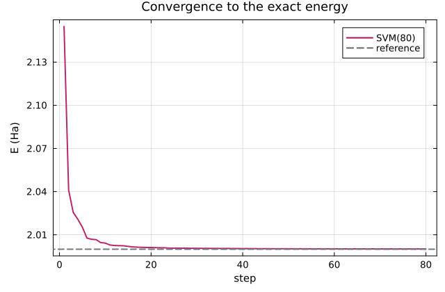
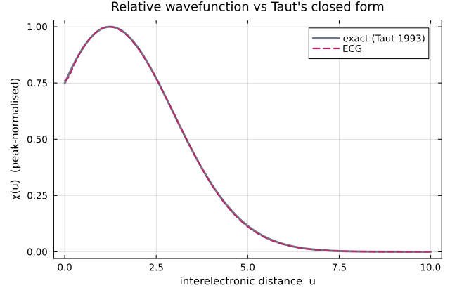
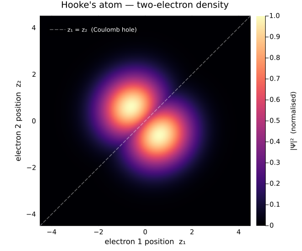

using FewBodyECG
using Plots
ω = 0.5
masses = [1.0e15, 1.0, 1.0]
ops = Operators(masses)
ops += "Kinetic"
ops += ("Oscillator", 1, 2, 0.5 * ω^2) # ½ω² r₁² (trap on electron 1)
ops += ("Oscillator", 1, 3, 0.5 * ω^2) # ½ω² r₂² (trap on electron 2)
ops += ("Coulomb", 2, 3, 1.0) # +1/r₁₂ electron–electron repulsion
exact = 2.0 # Taut 1993, ω = 1/2
sol = solve(ops, SVM(basis = 80, candidates = 40, scale = 2.0))
println("Hooke's atom E₀ = ", sol.E₀, " Ha (Taut exact ", exact, ", Δ = ", sol.E₀ - exact, ")")
println("variational upper bound respected: ", sol.E₀ ≥ exact)
solFewBodyECG solution — 80 × Rank0Gaussian, 4 operator terms
method SVM(80)
E₀ 2.0001602 Ha (variational upper bound)
convergence ConvergenceReport: ✓ saturated ΔE = 7.0e-5 Ha over last 20 additions (tol 1.0e-4)
note: basis saturation under this sampler — not a certificate of the exact eigenvalue
conditioning cond(S) ≈ 1.1e9 — handled (whitened eigensolver)Shared styling so the three figures read as one consistent set: a magma-family magenta for the ECG (computed) data, a neutral slate for the reference/exact.
FIG = (
titlefontsize = 12, guidefontsize = 10, tickfontsize = 9, legendfontsize = 9,
framestyle = :box, grid = true, gridalpha = 0.12, size = (640, 420), dpi = 200,
left_margin = 4Plots.mm, bottom_margin = 3Plots.mm,
)
ecg_color = RGB(0.72, 0.16, 0.42) # computed (ECG)
ref_color = RGB(0.45, 0.47, 0.52) # reference / exact
plot(
sol, exact;
palette = [ecg_color, ref_color], linewidth = 2,
title = "Convergence to the exact energy", FIG...,
)
Back to laboratory coordinates: jacobi_transform gives J mapping physical particle positions to the (mass-weighted) Jacobi coordinates the solution uses, so ψ(J·r) evaluates the wavefunction directly in coordinate space.
ψ = wavefunction(sol)
J, _ = jacobi_transform(masses)
Ψ(z₁, z₂) = ψ(J * [0.0, z₁, z₂]) # electrons at z₁, z₂ on the axis; centre at 0Ψ (generic function with 1 method)Relative wavefunction χ(u): electrons at ±u/2 (centre of mass at the trap origin) vs Taut's closed form χ(u) ∝ (1 + u/2) e^{-u²/8}.
u = range(0, 10, length = 200)
χ_ecg = [Ψ(x / 2, -x / 2) for x in u]
χ_exact = [(1 + x / 2) * exp(-x^2 / 8) for x in u]
χ_ecg ./= maximum(abs, χ_ecg) # peak-normalise for shape
χ_exact ./= maximum(χ_exact)
χ_ecg .*= sign(sum(χ_ecg .* χ_exact))
println("max |Δχ| (shape) = ", maximum(abs, χ_ecg .- χ_exact))
plot(u, χ_exact; label = "exact (Taut 1993)", color = ref_color, linewidth = 3, FIG...)
plot!(
u, χ_ecg; label = "ECG", color = ecg_color, linestyle = :dash, linewidth = 2,
xlabel = "interelectronic distance u", ylabel = "χ(u) (peak-normalised)",
title = "Relative wavefunction vs Taut's closed form", legend = :topright,
)
Full two-electron density in coordinate space. The reduced amplitude along the diagonal z₁ = z₂ is the Coulomb hole — the electrons avoid each other.
lim = 4.5
zs = range(-lim, lim, length = 251)
density = [abs2(Ψ(z₁, z₂)) for z₂ in zs, z₁ in zs]
density ./= maximum(density) # peak-normalise → colorbar 0…1
heatmap(
zs, zs, density;
c = :magma, clims = (0, 1),
xlims = (-lim, lim), ylims = (-lim, lim), aspect_ratio = :equal,
xlabel = "electron 1 position z₁", ylabel = "electron 2 position z₂",
colorbar_title = "\n|Ψ|² (normalised)", colorbar_titlefontsize = 9,
title = "Hooke's atom — two-electron density",
titlefontsize = 12, guidefontsize = 10, tickfontsize = 9,
grid = false, framestyle = :box, widen = false,
size = (600, 500), dpi = 200, left_margin = 3Plots.mm,
)
# dashed line marks where the electrons coincide — the trough is the Coulomb hole
plot!(
[-lim, lim], [-lim, lim];
color = :white, alpha = 0.4, linestyle = :dash, linewidth = 1.5,
label = "z₁ = z₂ (Coulomb hole)", legend = :topleft, foreground_color_legend = nothing,
background_color_legend = RGBA(0, 0, 0, 0.35), legendfontcolor = :white, legendfontsize = 8,
)
This page was generated using Literate.jl.